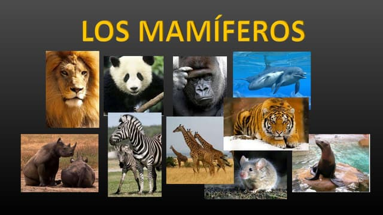
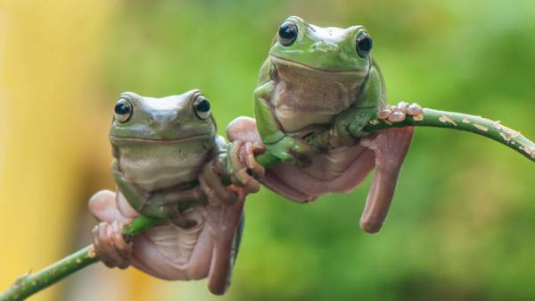
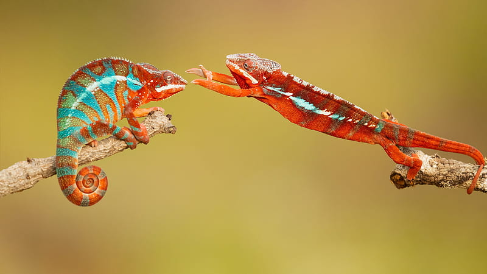
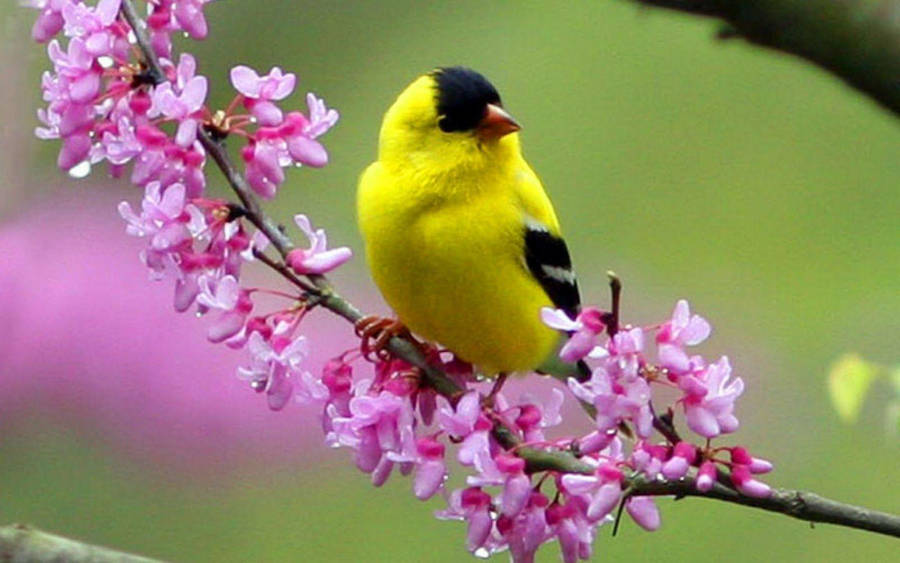
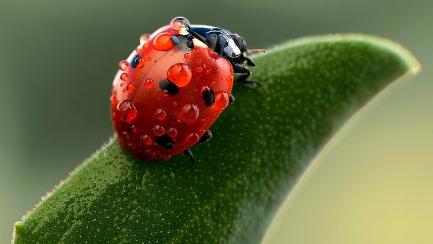
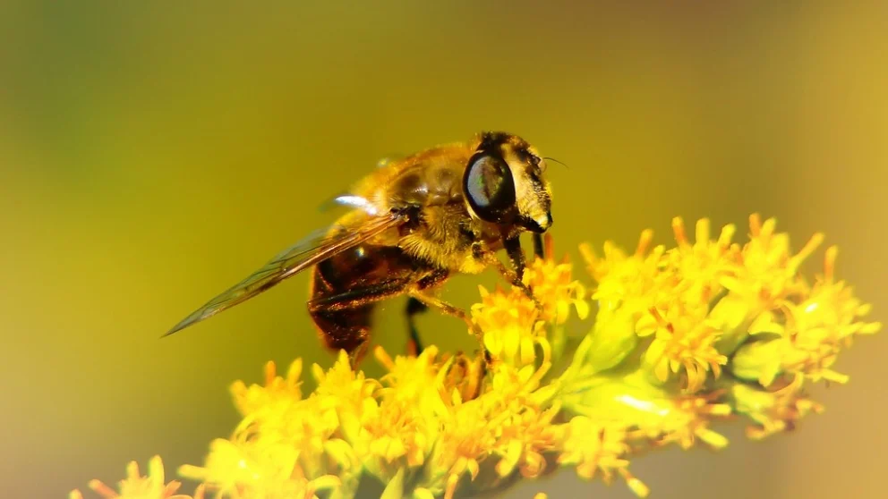
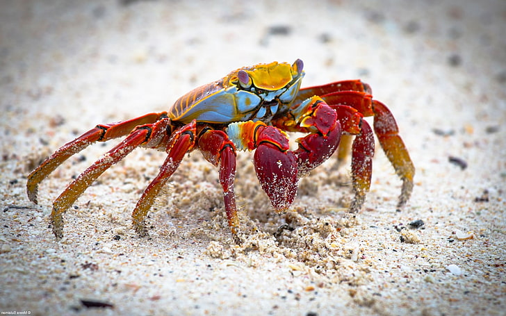

Mamíferos
Los mamíferos son animales vertebrados de sangre caliente que poseen glándulas mamarias para alimentar a sus crías.
Ver másAnfibios
Los anfibios son animales vertebrados que pueden vivir tanto en el agua como en la tierra.
Ver másReptiles
Los reptiles son animales vertebrados que tienen la piel cubierta de escamas y ponen huevos.
Ver másPeces

Los peces son animales vertebrados que viven en el agua y respiran a través de branquias.
Ver másAves
Las aves son animales vertebrados de sangre caliente que tienen plumas y alas.
Ver másInsectos
Los insectos son animales invertebrados con exoesqueleto, cuerpo segmentado y tres pares de patas.
Ver másArtrópodos
Los artrópodos son invertebrados con exoesqueleto, cuerpo segmentado y apéndices articulados.
Ver másCrustáceos
Los crustáceos son artrópodos que viven principalmente en el agua y tienen un exoesqueleto duro.
Ver másMoluscos

Los moluscos son invertebrados con cuerpo blando, muchos de los cuales tienen una concha dura.
Ver más